Chapter 15 Ensembles
15.2 Bagging
sin_dgp = function(sample_size = 150) {
x = runif(n = sample_size, min = -10, max = 10)
y = 2 * sin(x) + rnorm(n = sample_size)
tibble(x = x, y = y)
}par(mfrow = c(1, 3))
some_data = sin_dgp()
plot(some_data, pch = 20, col = "darkgrey")
grid()
curve(2 * sin(x), add = TRUE, col = "black", lwd = 2)
fit_1 = rpart(y ~ x, data = some_data, cp = 0)
curve(predict(fit_1, tibble(x = x)), add = TRUE, lwd = 2, col = "dodgerblue")
some_data = sin_dgp()
plot(some_data, pch = 20, col = "darkgrey")
grid()
curve(2 * sin(x), add = TRUE, col = "black", lwd = 2)
fit_2 = rpart(y ~ x, data = some_data, cp = 0)
curve(predict(fit_2, tibble(x = x)), add = TRUE, lwd = 2, col = "dodgerblue")
some_data = sin_dgp()
plot(some_data, pch = 20, col = "darkgrey")
grid()
curve(2 * sin(x), add = TRUE, col = "black", lwd = 2)
fit_3 = rpart(y ~ x, data = some_data, cp = 0)
curve(predict(fit_3, tibble(x = x)), add = TRUE, lwd = 2, col = "dodgerblue")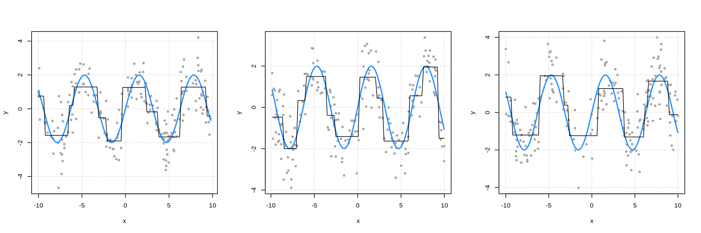
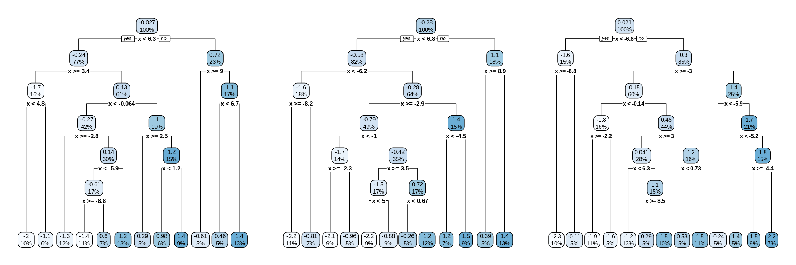
bag_pred = function(x) {
apply(t(map_df(boot_reps, predict, data.frame(x = x))), 2, mean)
}
set.seed(42)
boot_idx = caret::createResample(y = some_data$y, times = 100)
boot_reps = map(boot_idx, ~ rpart(y ~ x, data = some_data[.x, ], cp = 0))
bag_pred(x = c(-1, 0 , 1))## [1] -1.87295394 0.06556445 1.18010317par(mfrow = c(1, 3))
some_data = sin_dgp()
plot(some_data, pch = 20, col = "darkgrey")
grid()
curve(2 * sin(x), add = TRUE, col = "black", lwd = 2)
boot_idx = caret::createResample(y = some_data$y, times = 100)
boot_reps = map(boot_idx, ~ rpart(y ~ x, data = some_data[.x, ], cp = 0))
curve(bag_pred(x = x), add = TRUE, lwd = 2, col = "dodgerblue")
some_data = sin_dgp()
plot(some_data, pch = 20, col = "darkgrey")
grid()
curve(2 * sin(x), add = TRUE, col = "black", lwd = 2)
boot_idx = caret::createResample(y = some_data$y, times = 100)
boot_reps = map(boot_idx, ~ rpart(y ~ x, data = some_data[.x, ], cp = 0))
curve(bag_pred(x = x), add = TRUE, lwd = 2, col = "dodgerblue")
some_data = sin_dgp()
plot(some_data, pch = 20, col = "darkgrey")
grid()
curve(2 * sin(x), add = TRUE, col = "black", lwd = 2)
boot_idx = caret::createResample(y = some_data$y, times = 100)
boot_reps = map(boot_idx, ~ rpart(y ~ x, data = some_data[.x, ], cp = 0))
curve(bag_pred(x = x), add = TRUE, lwd = 2, col = "dodgerblue")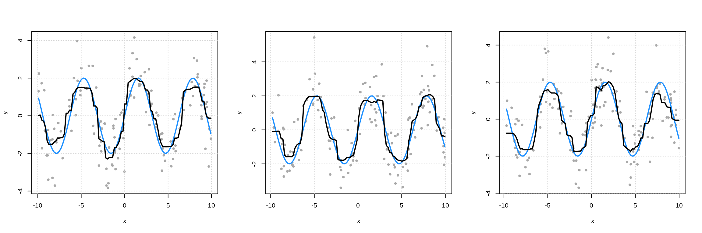
15.2.1 Simultation Study
sim_bagging_vs_single = function() {
some_data = sin_dgp()
single = predict(rpart(y ~ x, data = some_data, cp = 0), new_obs)
boot_idx = caret::createResample(y = some_data$y, times = 100)
boot_reps = map(boot_idx, ~ rpart(y ~ x, data = some_data[.x, ], cp = 0))
bagged = mean(map_dbl(boot_reps, predict, new_obs))
c(single = single, bagged = bagged)
}
set.seed(42)
sim_results = replicate(n = 250, sim_bagging_vs_single())
apply(sim_results, 1, mean)## single.1 bagged
## -0.02487810 0.03302126## single.1 bagged
## 1.0147130 0.335657915.3 Random Forest
set.seed(42)
two_class_data = as_tibble(caret::twoClassSim(n = 1250, noiseVars = 20))
two_class_data## # A tibble: 1,250 x 36
## TwoFactor1 TwoFactor2 Linear01 Linear02 Linear03 Linear04 Linear05
## <dbl> <dbl> <dbl> <dbl> <dbl> <dbl> <dbl>
## 1 2.68 0.843 0.617 0.761 0.0712 -0.368 0.294
## 2 -0.496 -0.955 -0.00454 -0.172 0.970 -1.28 -0.404
## 3 -0.577 1.51 -0.0913 -0.265 0.310 -1.98 -2.18
## 4 1.06 0.567 0.400 -0.424 -0.140 -1.24 0.198
## 5 1.21 -0.171 0.589 0.689 -0.326 -0.541 1.92
## 6 -0.161 -0.112 -0.0169 1.05 -0.119 -0.219 -0.928
## 7 1.20 2.68 0.419 -2.19 0.894 -1.30 -0.329
## 8 0.812 -1.06 0.801 -0.503 0.211 1.45 0.952
## 9 2.74 2.44 0.680 0.880 -0.489 -0.197 1.64
## 10 -0.357 0.196 1.31 1.55 -0.220 0.891 -0.764
## # … with 1,240 more rows, and 29 more variables: Linear06 <dbl>,
## # Linear07 <dbl>, Linear08 <dbl>, Linear09 <dbl>, Linear10 <dbl>,
## # Nonlinear1 <dbl>, Nonlinear2 <dbl>, Nonlinear3 <dbl>, Noise01 <dbl>,
## # Noise02 <dbl>, Noise03 <dbl>, Noise04 <dbl>, Noise05 <dbl>,
## # Noise06 <dbl>, Noise07 <dbl>, Noise08 <dbl>, Noise09 <dbl>,
## # Noise10 <dbl>, Noise11 <dbl>, Noise12 <dbl>, Noise13 <dbl>,
## # Noise14 <dbl>, Noise15 <dbl>, Noise16 <dbl>, Noise17 <dbl>,
## # Noise18 <dbl>, Noise19 <dbl>, Noise20 <dbl>, Class <fct>##
## Call:
## randomForest(formula = Class ~ ., data = two_class_data)
## Type of random forest: classification
## Number of trees: 500
## No. of variables tried at each split: 5
##
## OOB estimate of error rate: 18.24%
## Confusion matrix:
## Class1 Class2 class.error
## Class1 562 96 0.1458967
## Class2 132 460 0.2229730## [1] "228 string mismatches"tibble(
"Training Observation" = 1:10,
"OOB Predictions" = head(predict(fit), n = 10),
"Full Forest Predictions" = head(predict(fit, two_class_data), n = 10)
) %>%
kable() %>%
kable_styling("striped", full_width = FALSE)| Training Observation | OOB Predictions | Full Forest Predictions |
|---|---|---|
| 1 | Class1 | Class1 |
| 2 | Class1 | Class1 |
| 3 | Class2 | Class2 |
| 4 | Class1 | Class1 |
| 5 | Class2 | Class1 |
| 6 | Class1 | Class1 |
| 7 | Class2 | Class2 |
| 8 | Class1 | Class1 |
| 9 | Class2 | Class2 |
| 10 | Class1 | Class1 |
## Class1 Class2
## 0.822 0.178## [1] "Class2" "Class1" "Class1" "Class1" "Class1" "Class1" "Class1"
## [8] "Class1" "Class1" "Class1" "Class1" "Class2" "Class1" "Class1"
## [15] "Class1" "Class1" "Class1" "Class1" "Class1" "Class1" "Class2"
## [22] "Class1" "Class2" "Class1" "Class1" "Class1" "Class1" "Class1"
## [29] "Class1" "Class1" "Class1" "Class1" "Class2" "Class1" "Class1"
## [36] "Class1" "Class1" "Class1" "Class1" "Class1" "Class1" "Class2"
## [43] "Class2" "Class1" "Class1" "Class1" "Class1" "Class1" "Class1"
## [50] "Class1" "Class2" "Class2" "Class2" "Class1" "Class1" "Class1"
## [57] "Class1" "Class1" "Class2" "Class2" "Class1" "Class1" "Class1"
## [64] "Class1" "Class1" "Class1" "Class1" "Class1" "Class1" "Class1"
## [71] "Class1" "Class1" "Class1" "Class2" "Class1" "Class1" "Class1"
## [78] "Class1" "Class1" "Class1" "Class1" "Class1" "Class1" "Class1"
## [85] "Class1" "Class1" "Class2" "Class1" "Class1" "Class1" "Class1"
## [92] "Class1" "Class1" "Class1" "Class2" "Class1" "Class1" "Class1"
## [99] "Class1" "Class1" "Class2" "Class1" "Class1" "Class1" "Class1"
## [106] "Class1" "Class2" "Class1" "Class2" "Class1" "Class2" "Class1"
## [113] "Class1" "Class1" "Class1" "Class1" "Class1" "Class1" "Class1"
## [120] "Class2" "Class1" "Class1" "Class1" "Class2" "Class1" "Class1"
## [127] "Class1" "Class1" "Class2" "Class1" "Class1" "Class1" "Class2"
## [134] "Class1" "Class1" "Class1" "Class1" "Class2" "Class2" "Class1"
## [141] "Class1" "Class1" "Class1" "Class1" "Class1" "Class2" "Class1"
## [148] "Class1" "Class1" "Class1" "Class1" "Class1" "Class1" "Class1"
## [155] "Class1" "Class1" "Class1" "Class1" "Class1" "Class1" "Class1"
## [162] "Class1" "Class1" "Class1" "Class1" "Class1" "Class1" "Class1"
## [169] "Class1" "Class2" "Class1" "Class1" "Class1" "Class2" "Class1"
## [176] "Class1" "Class1" "Class1" "Class2" "Class2" "Class1" "Class1"
## [183] "Class1" "Class2" "Class1" "Class1" "Class2" "Class1" "Class1"
## [190] "Class2" "Class1" "Class2" "Class1" "Class1" "Class1" "Class1"
## [197] "Class1" "Class1" "Class1" "Class1" "Class1" "Class1" "Class1"
## [204] "Class1" "Class1" "Class2" "Class1" "Class1" "Class1" "Class1"
## [211] "Class1" "Class1" "Class1" "Class1" "Class1" "Class1" "Class1"
## [218] "Class1" "Class2" "Class1" "Class1" "Class2" "Class2" "Class2"
## [225] "Class1" "Class1" "Class1" "Class1" "Class2" "Class1" "Class1"
## [232] "Class1" "Class1" "Class1" "Class1" "Class1" "Class2" "Class2"
## [239] "Class1" "Class1" "Class1" "Class1" "Class1" "Class1" "Class1"
## [246] "Class1" "Class1" "Class1" "Class1" "Class1" "Class1" "Class1"
## [253] "Class1" "Class1" "Class2" "Class1" "Class1" "Class1" "Class2"
## [260] "Class1" "Class1" "Class1" "Class1" "Class1" "Class1" "Class1"
## [267] "Class2" "Class1" "Class1" "Class1" "Class1" "Class1" "Class2"
## [274] "Class1" "Class2" "Class1" "Class1" "Class1" "Class1" "Class1"
## [281] "Class1" "Class1" "Class1" "Class1" "Class2" "Class1" "Class1"
## [288] "Class1" "Class2" "Class1" "Class1" "Class1" "Class1" "Class1"
## [295] "Class1" "Class1" "Class1" "Class1" "Class1" "Class1" "Class2"
## [302] "Class1" "Class1" "Class1" "Class1" "Class1" "Class1" "Class1"
## [309] "Class1" "Class1" "Class1" "Class1" "Class1" "Class2" "Class2"
## [316] "Class1" "Class1" "Class1" "Class1" "Class1" "Class1" "Class1"
## [323] "Class1" "Class1" "Class1" "Class1" "Class2" "Class2" "Class1"
## [330] "Class1" "Class1" "Class1" "Class1" "Class2" "Class1" "Class1"
## [337] "Class1" "Class2" "Class1" "Class1" "Class1" "Class1" "Class1"
## [344] "Class1" "Class1" "Class1" "Class1" "Class1" "Class1" "Class1"
## [351] "Class1" "Class2" "Class1" "Class1" "Class1" "Class1" "Class1"
## [358] "Class2" "Class1" "Class1" "Class1" "Class1" "Class2" "Class1"
## [365] "Class1" "Class1" "Class1" "Class2" "Class1" "Class1" "Class1"
## [372] "Class2" "Class1" "Class1" "Class2" "Class2" "Class1" "Class2"
## [379] "Class2" "Class1" "Class1" "Class1" "Class1" "Class2" "Class2"
## [386] "Class1" "Class1" "Class2" "Class2" "Class2" "Class1" "Class2"
## [393] "Class1" "Class1" "Class2" "Class1" "Class1" "Class1" "Class1"
## [400] "Class2" "Class2" "Class1" "Class1" "Class2" "Class1" "Class2"
## [407] "Class1" "Class1" "Class1" "Class1" "Class1" "Class2" "Class1"
## [414] "Class1" "Class1" "Class2" "Class1" "Class1" "Class1" "Class1"
## [421] "Class1" "Class1" "Class1" "Class1" "Class1" "Class1" "Class1"
## [428] "Class1" "Class1" "Class1" "Class1" "Class1" "Class2" "Class1"
## [435] "Class1" "Class2" "Class1" "Class2" "Class1" "Class1" "Class1"
## [442] "Class1" "Class1" "Class1" "Class1" "Class1" "Class1" "Class1"
## [449] "Class1" "Class1" "Class1" "Class1" "Class2" "Class2" "Class1"
## [456] "Class1" "Class1" "Class1" "Class1" "Class1" "Class1" "Class1"
## [463] "Class1" "Class1" "Class1" "Class1" "Class2" "Class1" "Class1"
## [470] "Class1" "Class2" "Class1" "Class1" "Class1" "Class2" "Class2"
## [477] "Class1" "Class2" "Class1" "Class1" "Class1" "Class1" "Class1"
## [484] "Class1" "Class1" "Class1" "Class1" "Class1" "Class1" "Class1"
## [491] "Class1" "Class2" "Class1" "Class1" "Class1" "Class1" "Class1"
## [498] "Class1" "Class1" "Class1"##
## Class1 Class2
## 411 89##
## Class1 Class2
## 0.822 0.178## [1] 0.368216## [1] 0.3678794## MeanDecreaseGini
## TwoFactor1 70.393099
## TwoFactor2 69.608199
## Linear01 11.352368
## Linear02 38.903234
## Linear03 34.207241
## Linear04 25.245839
## Linear05 24.898924
## Linear06 25.374816
## Linear07 17.307651
## Linear08 17.704504
## Linear09 13.516845
## Linear10 12.400794
## Nonlinear1 14.781874
## Nonlinear2 9.795264
## Nonlinear3 13.552729
## Noise01 10.566502
## Noise02 10.898295
## Noise03 11.989430
## Noise04 11.418045
## Noise05 10.899319
## Noise06 10.821215
## Noise07 11.185296
## Noise08 10.604101
## Noise09 11.301260
## Noise10 11.191305
## Noise11 11.084711
## Noise12 11.121672
## Noise13 11.678859
## Noise14 10.835472
## Noise15 11.372321
## Noise16 10.558511
## Noise17 10.862320
## Noise18 12.148751
## Noise19 11.807009
## Noise20 11.396611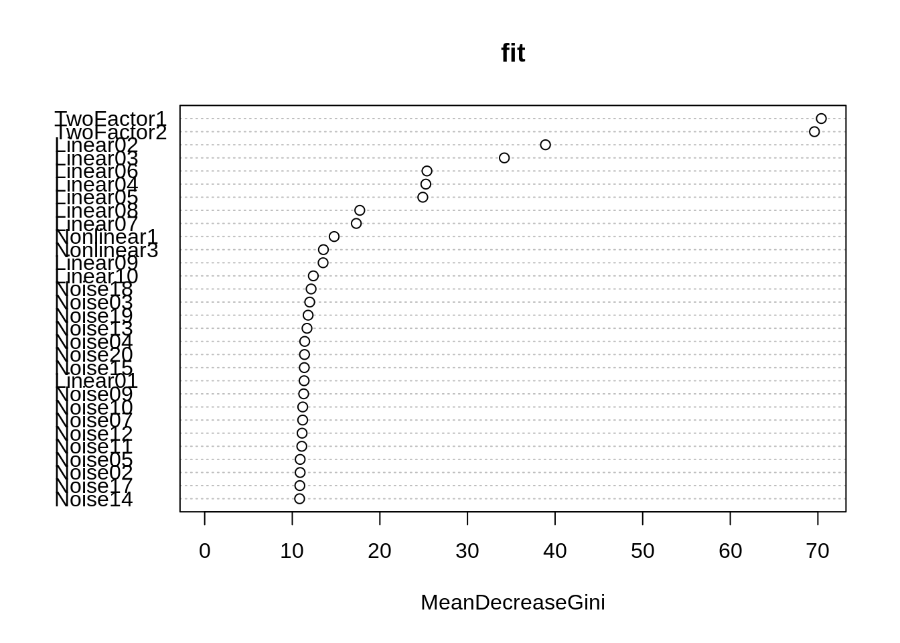
## Random Forest
##
## 1250 samples
## 35 predictor
## 2 classes: 'Class1', 'Class2'
##
## No pre-processing
## Resampling results across tuning parameters:
##
## mtry Accuracy Kappa
## 2 0.8168 0.6309813
## 18 0.8304 0.6592744
## 35 0.8288 0.6564099
##
## Accuracy was used to select the optimal model using the largest value.
## The final value used for the model was mtry = 18.15.4 Boosting
sin_dgp = function(sample_size = 150) {
x = runif(n = sample_size, min = -10, max = 10)
y = 2 * sin(x) + rnorm(n = sample_size)
tibble(x = x, y = y)
}plot(sim_data, ylim = c(-6, 6), pch = 20, col = "darkgrey")
grid()
curve(2 * sin(x), col = "black", add = TRUE, lwd = 2)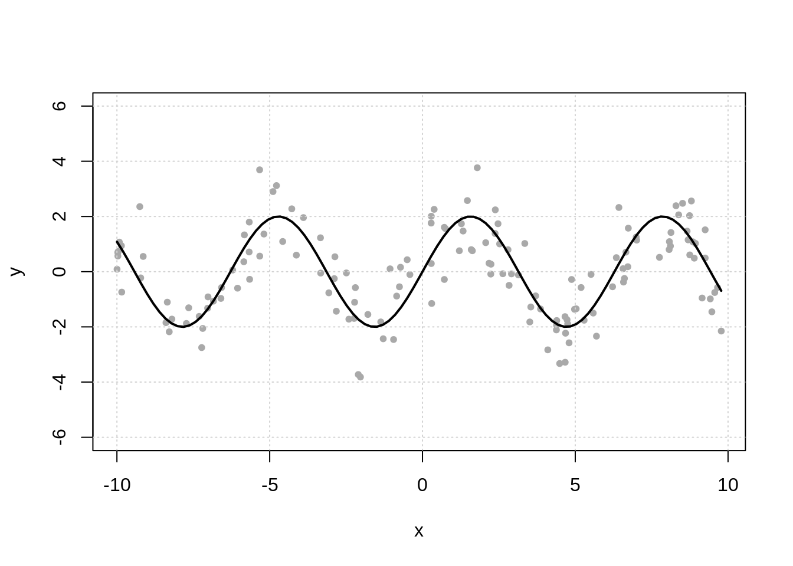
par(mfrow = c(1, 3))
splits = 99
while(splits > 0) {
plot(sim_data_for_boosting, ylim = c(-6, 6), pch = 20, col = "darkgrey")
grid()
fit = rpart(y ~ x, data = sim_data_for_boosting, maxdepth = 2)
curve(predict(fit, data.frame(x = x)), add = TRUE, lwd = 2, col = "dodgerblue")
sim_data_for_boosting$y = sim_data_for_boosting$y - 0.4 * predict(fit)
splits = nrow(fit$frame) - 1
}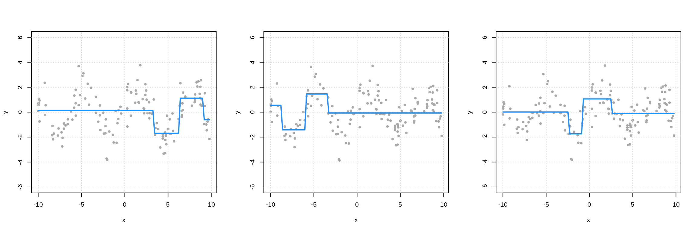 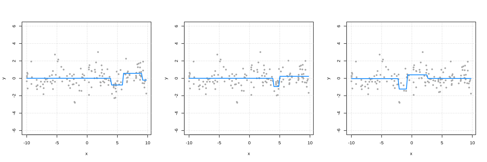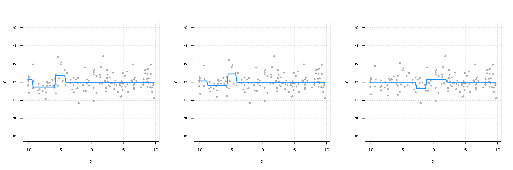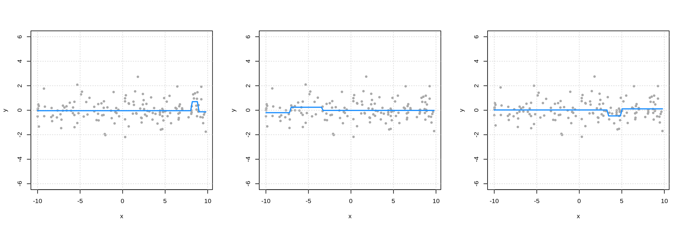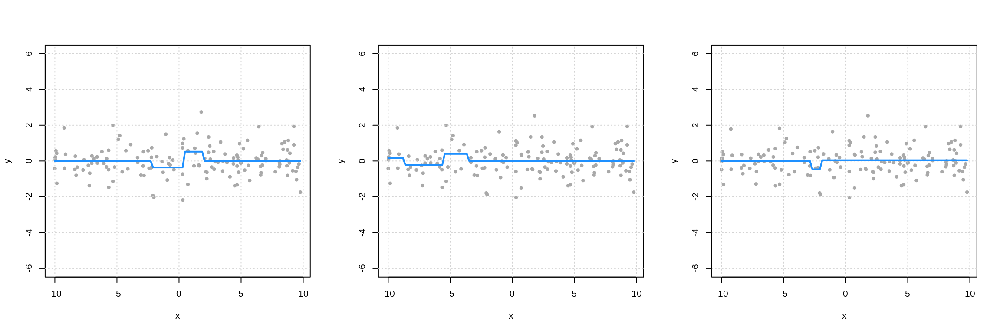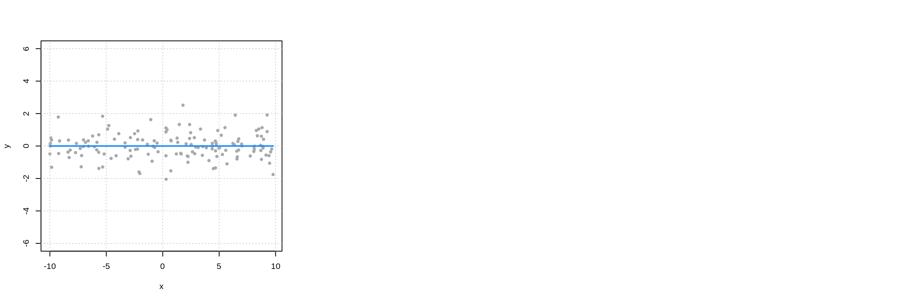
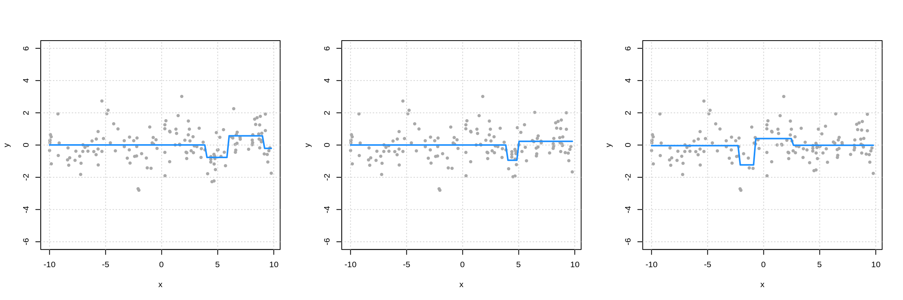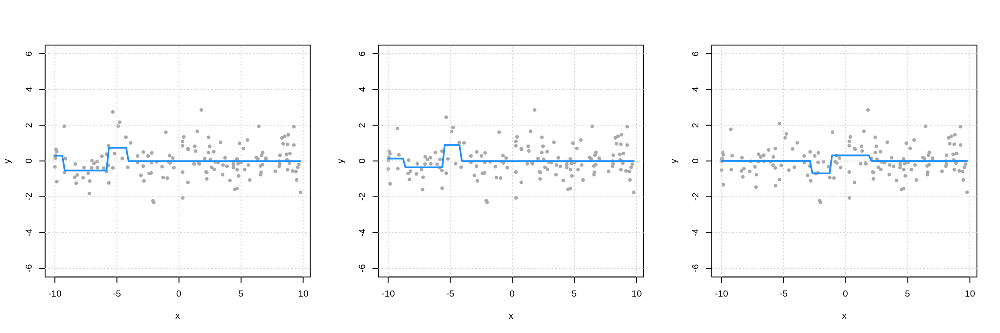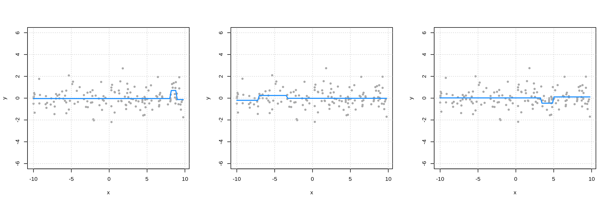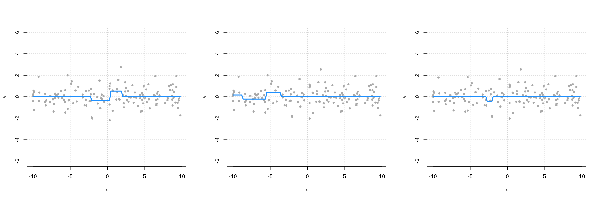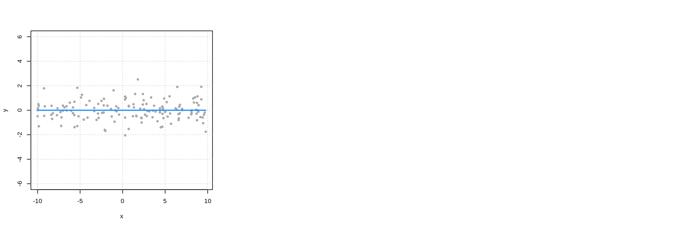
sim_data_for_boosting = sim_data
tree_list = list()
for (i in 1:100) {
fit = rpart(y ~ x, data = sim_data_for_boosting, maxdepth = 2)
tree_list[[i]] = fit
sim_data_for_boosting$y = sim_data_for_boosting$y - 0.4 * predict(fit)
}
names(tree_list) = 1:100
boost_pred = function(x) {
apply(t(map_df(tree_list, predict, data.frame(x = x))), 2, function(x) {0.4 * sum(x)})
}
plot(sim_data, ylim = c(-6, 6), pch = 20, col = "darkgrey")
grid()
curve(boost_pred(x), add = TRUE, lwd = 2, col = "dodgerblue")
curve(2 * sin(x), add = TRUE, col = "black", lwd = 2)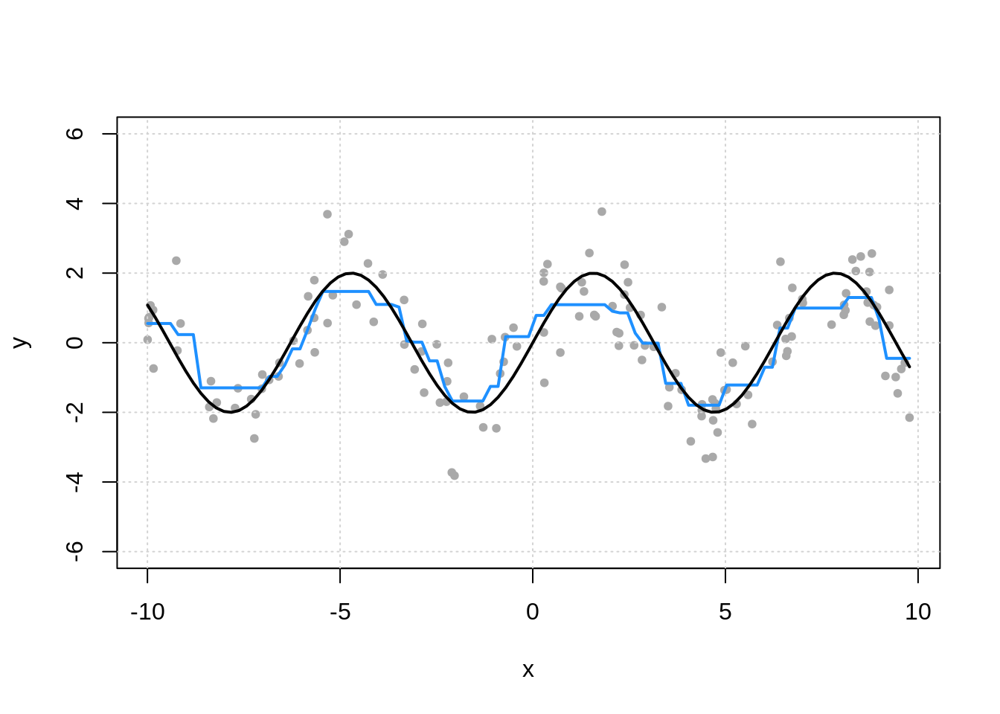
fit_caret_gbm = train(Class ~ ., data = two_class_data,
method = "gbm",
trControl = trainControl(method = "cv", number = 5),
verbose = FALSE)## Stochastic Gradient Boosting
##
## 1250 samples
## 35 predictor
## 2 classes: 'Class1', 'Class2'
##
## No pre-processing
## Resampling: Cross-Validated (5 fold)
## Summary of sample sizes: 1000, 1001, 999, 1000, 1000
## Resampling results across tuning parameters:
##
## interaction.depth n.trees Accuracy Kappa
## 1 50 0.7791409 0.5535950
## 1 100 0.8223827 0.6422082
## 1 150 0.8384244 0.6751165
## 2 50 0.8263923 0.6510654
## 2 100 0.8504245 0.6995372
## 2 150 0.8496213 0.6980252
## 3 50 0.8408117 0.6802285
## 3 100 0.8576086 0.7140311
## 3 150 0.8640214 0.7270698
##
## Tuning parameter 'shrinkage' was held constant at a value of 0.1
##
## Tuning parameter 'n.minobsinnode' was held constant at a value of 10
## Accuracy was used to select the optimal model using the largest value.
## The final values used for the model were n.trees = 150,
## interaction.depth = 3, shrinkage = 0.1 and n.minobsinnode = 10.fit_caret_xgb = train(Class ~ ., data = two_class_data,
method = "xgbTree",
trControl = trainControl(method = "cv", number = 5),
tuneLength = 2)## eXtreme Gradient Boosting
##
## 1250 samples
## 35 predictor
## 2 classes: 'Class1', 'Class2'
##
## No pre-processing
## Resampling: Cross-Validated (5 fold)
## Summary of sample sizes: 1000, 1001, 999, 1000, 1000
## Resampling results across tuning parameters:
##
## eta max_depth colsample_bytree subsample nrounds Accuracy
## 0.3 1 0.6 0.5 50 0.8392214
## 0.3 1 0.6 0.5 100 0.8544055
## 0.3 1 0.6 1.0 50 0.8296052
## 0.3 1 0.6 1.0 100 0.8464150
## 0.3 1 0.8 0.5 50 0.8360308
## 0.3 1 0.8 0.5 100 0.8512021
## 0.3 1 0.8 1.0 50 0.8288276
## 0.3 1 0.8 1.0 100 0.8512214
## 0.3 2 0.6 0.5 50 0.8488278
## 0.3 2 0.6 0.5 100 0.8536214
## 0.3 2 0.6 1.0 50 0.8464213
## 0.3 2 0.6 1.0 100 0.8576247
## 0.3 2 0.8 0.5 50 0.8456597
## 0.3 2 0.8 0.5 100 0.8592150
## 0.3 2 0.8 1.0 50 0.8600023
## 0.3 2 0.8 1.0 100 0.8631991
## 0.4 1 0.6 0.5 50 0.8384118
## 0.4 1 0.6 0.5 100 0.8447894
## 0.4 1 0.6 1.0 50 0.8384277
## 0.4 1 0.6 1.0 100 0.8584119
## 0.4 1 0.8 0.5 50 0.8472086
## 0.4 1 0.8 0.5 100 0.8599926
## 0.4 1 0.8 1.0 50 0.8432149
## 0.4 1 0.8 1.0 100 0.8656152
## 0.4 2 0.6 0.5 50 0.8400150
## 0.4 2 0.6 0.5 100 0.8400117
## 0.4 2 0.6 1.0 50 0.8440118
## 0.4 2 0.6 1.0 100 0.8472470
## 0.4 2 0.8 0.5 50 0.8400278
## 0.4 2 0.8 0.5 100 0.8448117
## 0.4 2 0.8 1.0 50 0.8520055
## 0.4 2 0.8 1.0 100 0.8520119
## Kappa
## 0.6769540
## 0.7078959
## 0.6565702
## 0.6910691
## 0.6705396
## 0.7012276
## 0.6551720
## 0.7010765
## 0.6965017
## 0.7061904
## 0.6916100
## 0.7142662
## 0.6901581
## 0.7177094
## 0.7189731
## 0.7256871
## 0.6750451
## 0.6882491
## 0.6748621
## 0.7156206
## 0.6931865
## 0.7188617
## 0.6845350
## 0.7300746
## 0.6789671
## 0.6795340
## 0.6868629
## 0.6933817
## 0.6791399
## 0.6885384
## 0.7030056
## 0.7029730
##
## Tuning parameter 'gamma' was held constant at a value of 0
##
## Tuning parameter 'min_child_weight' was held constant at a value of 1
## Accuracy was used to select the optimal model using the largest value.
## The final values used for the model were nrounds = 100, max_depth = 1,
## eta = 0.4, gamma = 0, colsample_bytree = 0.8, min_child_weight = 1
## and subsample = 1.